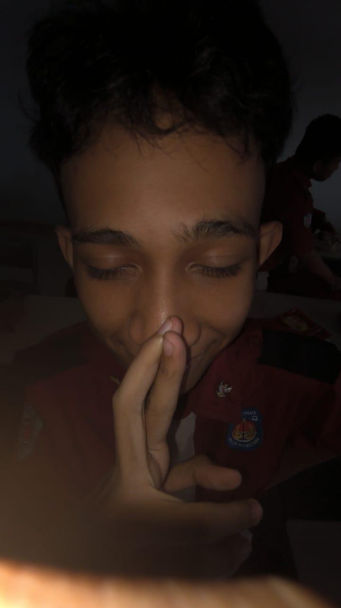

Introduction to Jujutsu Kaisen

*Jujutsu Kaisen* is an anime phenomenon that has drawn audiences worldwide due to its blend of horror, action, and philosophy. At the heart of the story is Yuji Itadori, a high school student whose life takes a dramatic turn when he unwittingly becomes the vessel for a powerful curse, Ryomen Sukuna. In this world, curses are the embodiment of humanity’s darkest fears and negative emotions, and their powers grow with the collective anxieties of people.
Under the mentorship of Gojo Satoru, a teacher at Jujutsu High and the most powerful sorcerer in the world, Yuji begins to navigate the complex world of Jujutsu sorcery. Alongside his friends and classmates, he learns that battles against curses are as much about personal growth and facing one’s fears as they are about pure power. *Jujutsu Kaisen* tackles themes of mortality, the value of life, and the cost of strength, making it a compelling story that resonates on many levels.
The Power of Cursed Techniques

In the *Jujutsu Kaisen* universe, cursed techniques are unique powers that sorcerers wield to combat curses, a core aspect of what sets the series apart. These techniques derive from cursed energy—negative emotions and thoughts channeled as raw power. Each sorcerer has an individual technique, often inherited or developed through intense training and emotional mastery. The power of these techniques lies in their diversity and creativity, with iconic examples like Gojo Satoru’s Infinity technique, which allows him to manipulate space itself, and Fushiguro’s Shikigami, summoning creatures to aid him in battle.
These techniques highlight each character’s personality and values. For example, Nobara Kugisaki’s Straw Doll Technique reflects her fierce, relentless nature, while Megumi Fushiguro’s Shikigami embodies his adaptability and resilience. The battles between sorcerers and curses become intricate displays of not only physical strength but also strategy, ingenuity, and a deep understanding of the opponent’s weaknesses. This approach keeps viewers on the edge of their seats, as each confrontation reveals something new about the characters and their techniques.
About the Blogger
Welcome to my blog! I'm a devoted anime enthusiast with a passion for diving into the worlds of my favorite shows, and *Jujutsu Kaisen* holds a special place in my heart. Here, I share insights, reviews, and my own theories on the anime’s storyline, characters, and evolving lore. If you enjoy a deep dive into anime worlds as much as I do, you’re in the right place!
Character Spotlight

In *Jujutsu Kaisen*, every character brings a unique perspective to the story. Yuji Itadori embodies courage and a desire to protect, while Gojo Satoru showcases unmatched strength with a lighthearted yet mysterious personality. Nobara and Megumi add depth to the show with their complex personalities and distinct powers. Each character's journey and development play a significant role in enriching the series, making it more than just a battle anime but a journey of growth and camaraderie.